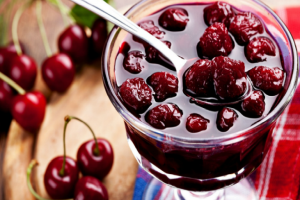

Cherry jam

Description:
Delicious pitted cherry jam is well suited for making desserts and on its own.
Ingridients:
- 1 kg - cherries
- 900 g - sugar
Cooking:
- To make cherry jam, measure the required amount of cherries and prepare sugar.
- Remove all twigs and leaves. Remove pits from cherries.
- Put the berries in a bowl. Sprinkle cherries with sugar. Cover and leave to stand for a few hours to allow the cherries to release their juice.
- When the berries start juice, put the pan on the fire, bring to a boil and boil them for 2-3 minutes. Then remove from heat, cover and leave to cool.
- So boil the jam 2 more times, allowing it to cool completely in between.
- Pour the boiling jam into the prepared jars. Close with lids. Jars of jam, after cooling, store in a cool place.